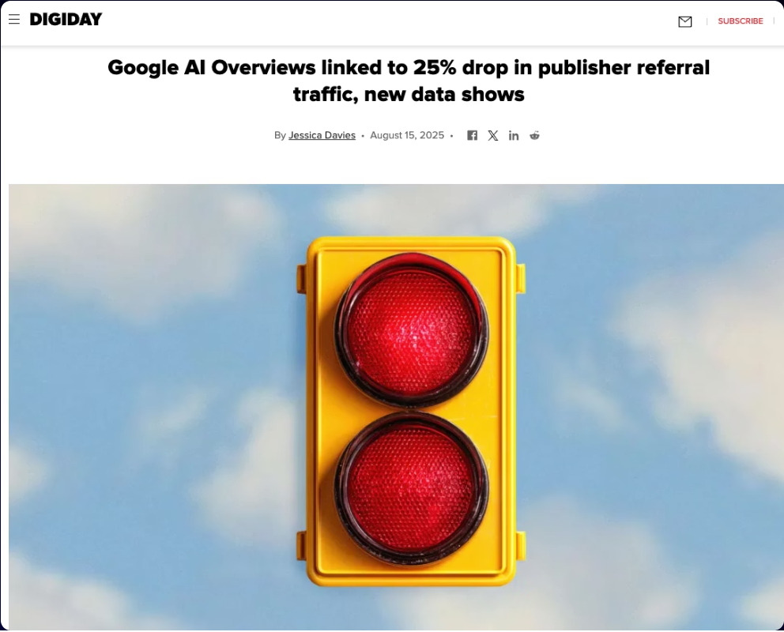
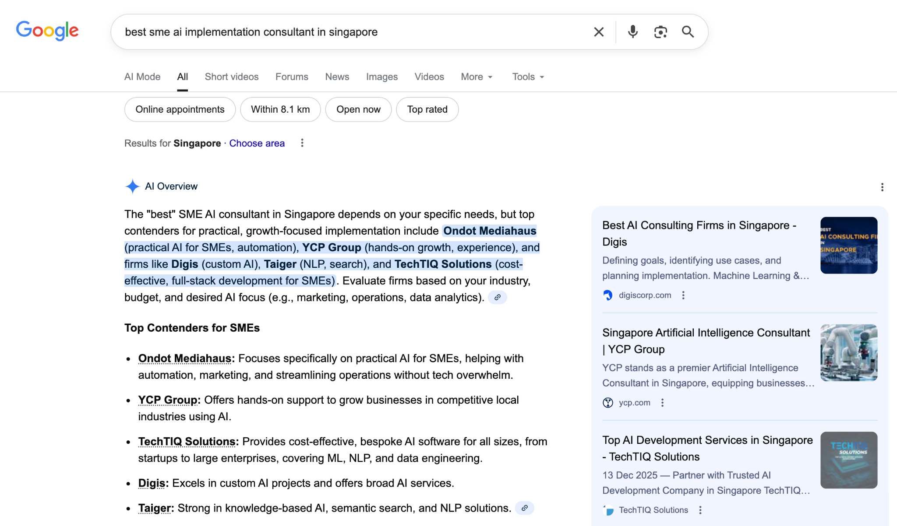
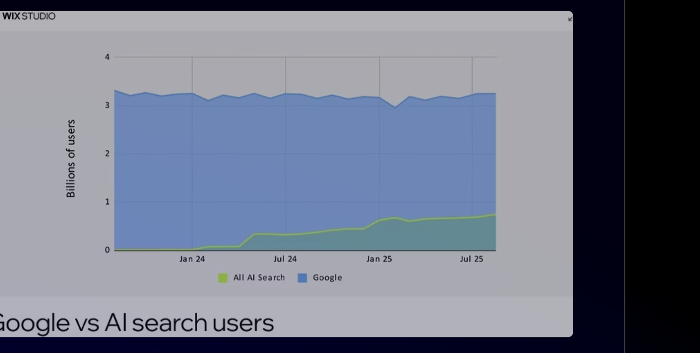
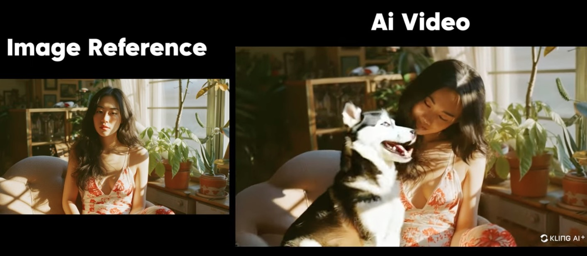
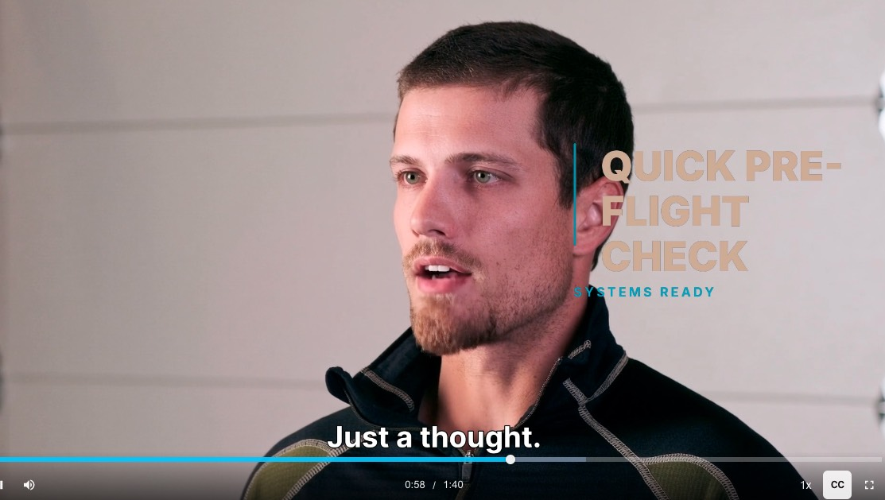
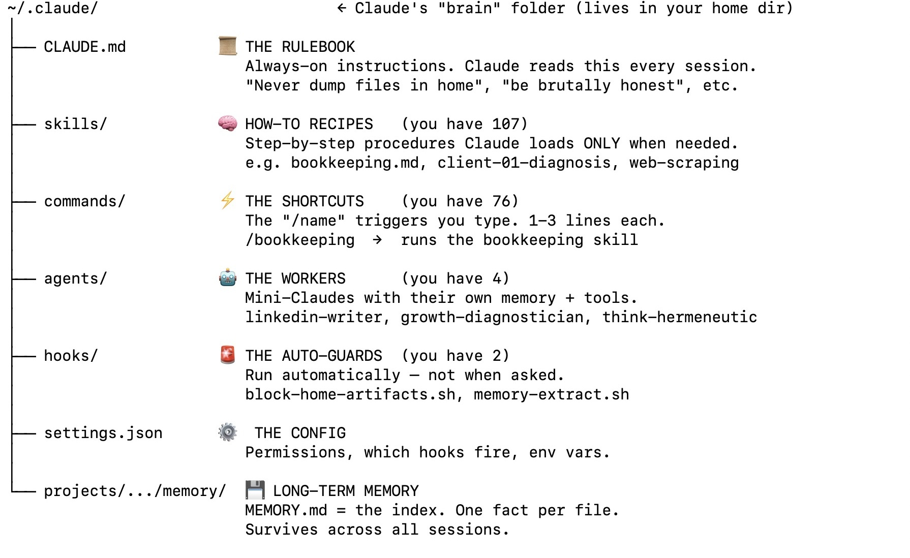
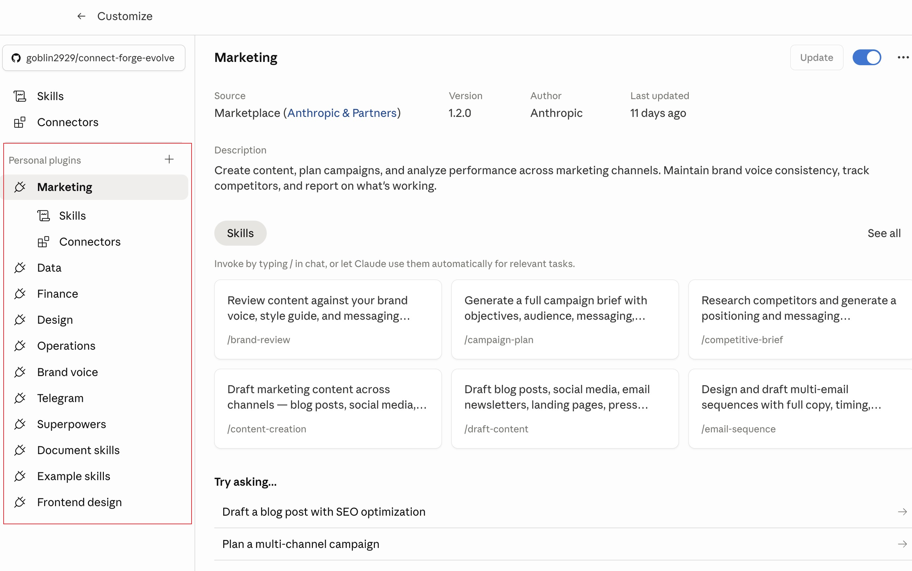
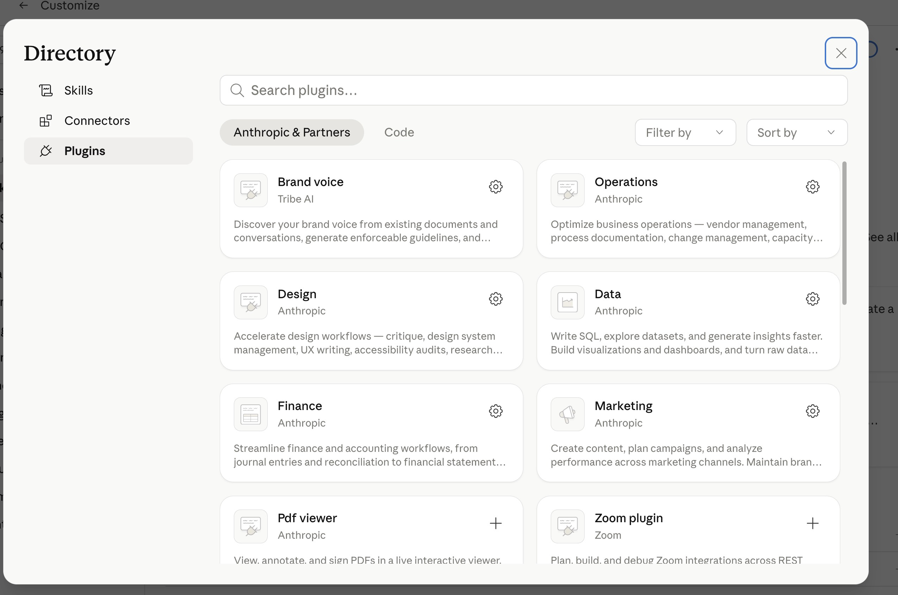

Search Console
Search Console  Google Analytics
Google Analytics Higgsfield
Higgsfield Sora
Sora Runway
Runway01
Data privacy & sensitive information

| Example keyword | Tier | KD (Keyword Difficulty) | Volume / mo |
|---|---|---|---|
| "digital marketing" | Primary — broad core topic | 66 | 90,500 |
| "digital marketing strategy" | Secondary — related, adds depth | 51 | 5,400 |
| "digital marketing tips for small business" | Long-tail — specific intent | 16 | 140 |



| Classic SEO | AEO | |
|---|---|---|
| Main KPI | Rank, traffic, sessions, conversions | Answer rate, source diversity, assisted (zero-click) conversions |
| Goal | Get traffic to your site | Earn inclusion in AI summaries |
| In your control | High | Medium to low |
| Where to be cited | Google SERP features | ChatGPT, Gemini, Perplexity, AI Overviews, YouTube, Reddit/Quora, Wikipedia |
| Owned media | Product pages, blog, YouTube | Anywhere you can answer a question (FAQ, help docs, blog) |
| On-site focus | Keywords, meta tags, link structure | FAQ schema, entities, machine-readable context |
| Off-site focus | Backlinks, domain authority | Entity building via PR, YouTube, social proof sites |


 HeyGen
HeyGen
| Pros | Cons / considerations |
|---|---|
| Fast, cheap video production | Can look generic or "template-like" |
| Reduces need for filming gear / expertise | May lack authenticity, emotion, human touch |
| Easy to iterate & test variants | Copyright / licensing risk (music, images) |
| Lower barrier for resource-limited SMEs | Quality may be low — needs manual review |
| — | No guarantee of a business outcome — time saved ≠ customers won |
| — | Strong at mimicking & copying, but lacks original creativity |
| Claude.ai | Cowork | Claude Code | |
|---|---|---|---|
| Metaphor | Smart colleague on chat | Delegated assistant in a sandbox | Agentic system you build with |
| Where it works | On Anthropic's servers | On your computer, in a sandbox | On your computer · full access |
| Interface | Browser / desktop app | Inside the desktop app | Terminal / IDE / Desktop app |
| Access to your system | Via uploads / copy-paste only | Limited sandbox — clicks, typing, screenshots | Full file edits · git, shell, VMs |
| Strengths | Think, write, analyze, use skills & MCP | Long-running tasks, browses, files, scheduled | Code, tools, hooks, agents, team skills |
| Best for | Quick turns, one-off thinking | Daily knowledge work · 80% | Reusable systems teams share |

cd into the right project folder first — Claude then automatically reads that project's CLAUDE.md, so the right rules, context and tools load themselves.


A plain English prompt in Cowork. You don't write code. You don't open GA4. You just ask.
Claude recognizes the task needs live data. It picks the right MCP tool from what you've connected.
The MCP server is a small program on your computer that talks to GA4's API on your behalf. Authenticated. Real numbers.
Claude turns the raw data into a team-ready summary in your voice. You review, edit, send.


| Skill | Agent | |
|---|---|---|
| Mental model | A recipe card | A specialist chef |
| Scope | One repeatable procedure | A role with judgment + tools |
| Context cost | Just the description (cheap) | Runs on its own whiteboard (free to your context) |
| Invocation | Auto-loads when description matches, or /name | Delegated by role — "have the analyst…" |
| Best for | Same steps, different inputs | Novel work · heavy research · cross-file synthesis |
| Example | "Audit this site with /aeo-audit" | "Why did organic traffic drop 15% last week?" |
| Symptom | What's happening |
|---|---|
| Claude forgets an instruction you gave 20 turns ago | Earlier content still in window — but attention is diluted |
| Output is shorter, more generic, less specific | Context rot · accuracy degrading |
| Agents produce inconsistent results across runs | Each invocation sees slightly different starting context |
| Plan steps get dropped mid-task | Long turn counts push old instructions out of focus |
| Claude re-asks for info you already provided | Recall failing despite info being "in context" |
| Inconsistent voice/tone in content work | Earlier brand rules no longer weighted properly |